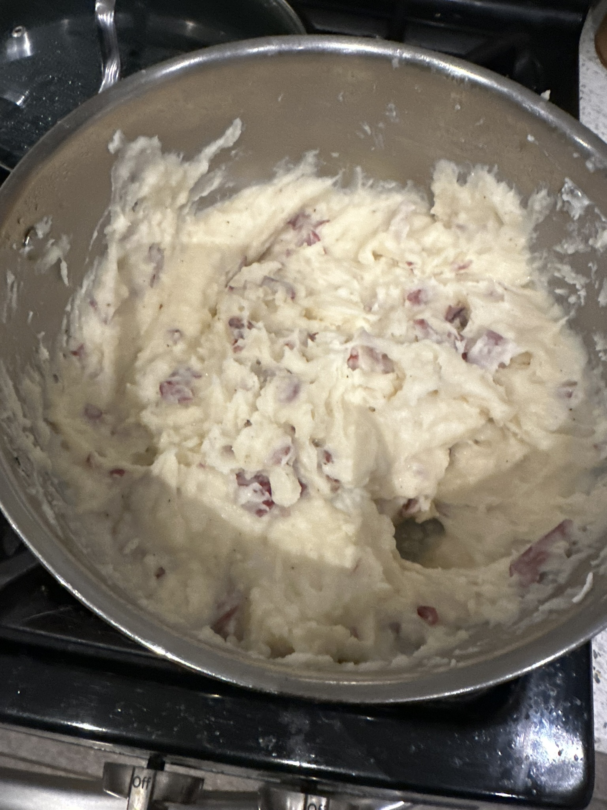

Home
Redskin Mashed Potatoes

Ingredients
You can't have Kielbasa and Sauerkraut without mashed potatoes. It's how my grandmothers always made it and that's just how it is.
- 3lbs. Redskin Potatoes
- 1 Stick of Butter
- 4 Cloves Garlic
- 11/4 cup Milk
- 1/4 Cup Sour Cream
- 1 Tsp. Duke's Mayo
- 1 Tsp. Salt
- 1 Tsp. Pepper
Equipment
- Knife
- Cutting Board
- Large Pot
- Colander
- Masher
Procedure
- Wash and quarter potatoes.
- Place potatoes and garlic in large pot and cover with water.
- Bring to a boil and cook until fork tender.
- Drain potatoes and garlic and return to pot.
- Add butter, milk, sour cream, mayo, salt, and pepper.
- Mash until desired consistency.